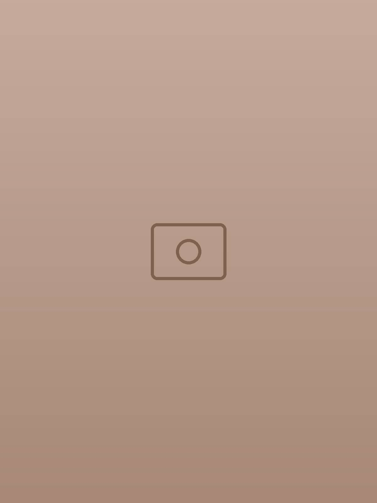
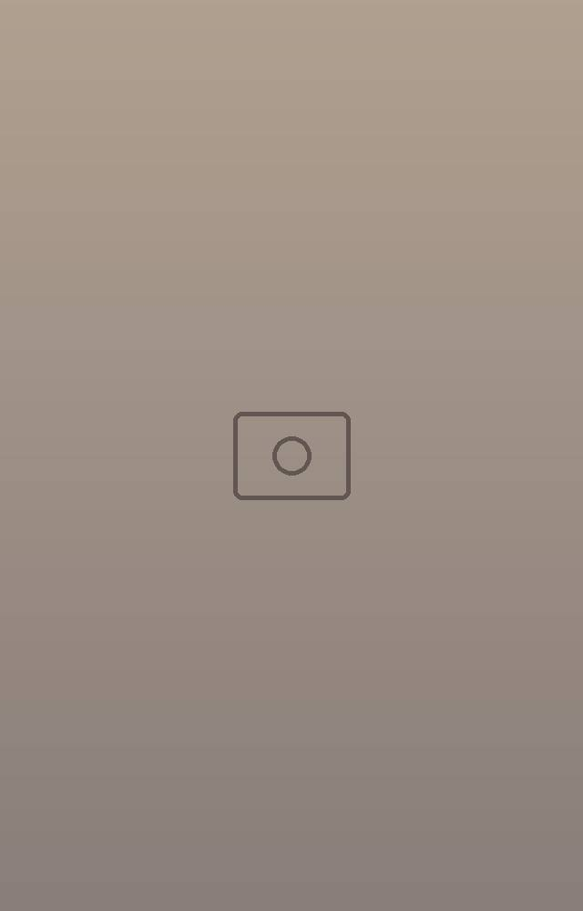
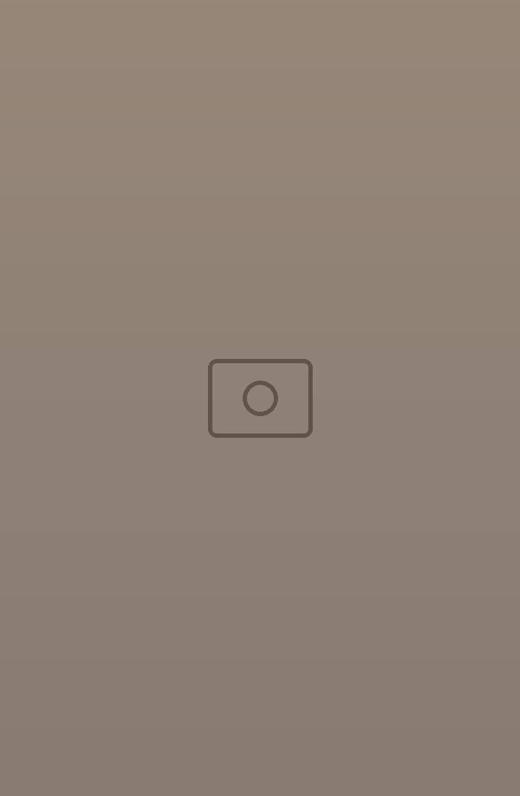
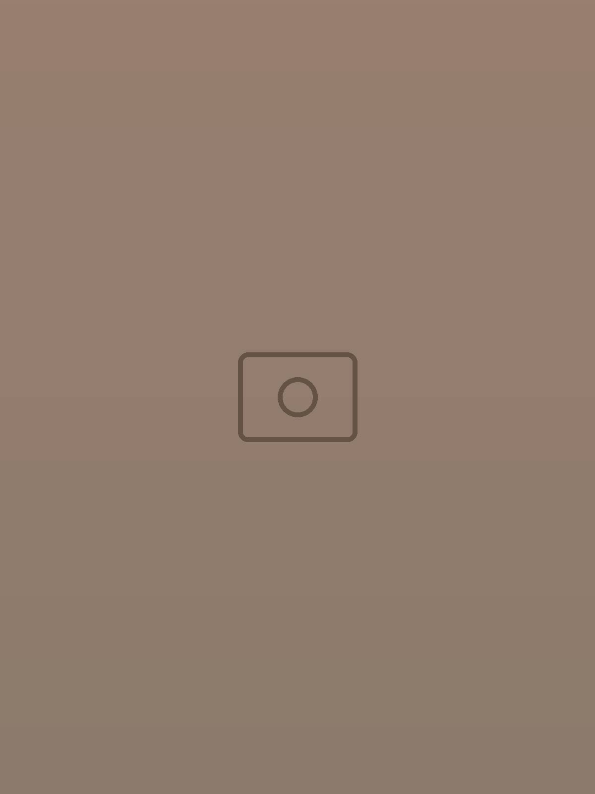
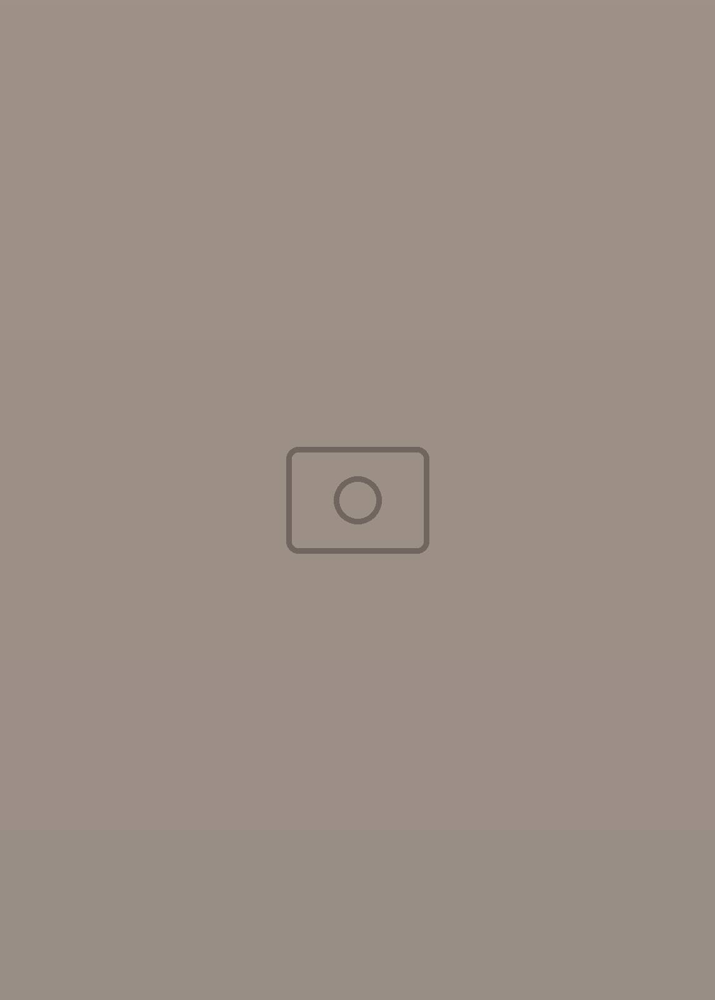
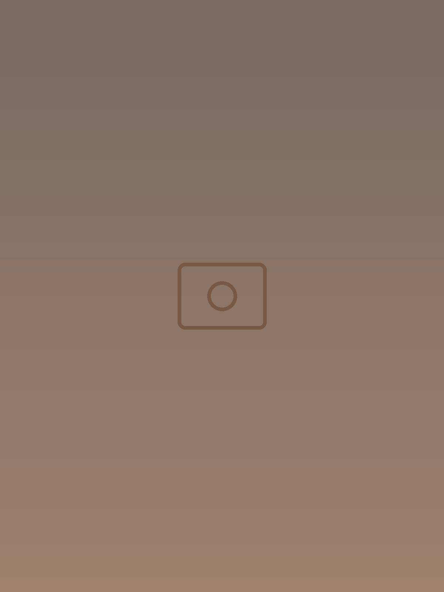
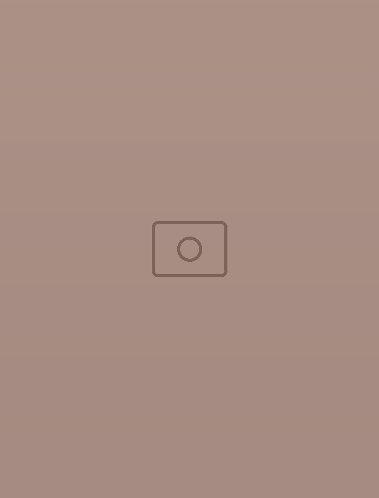
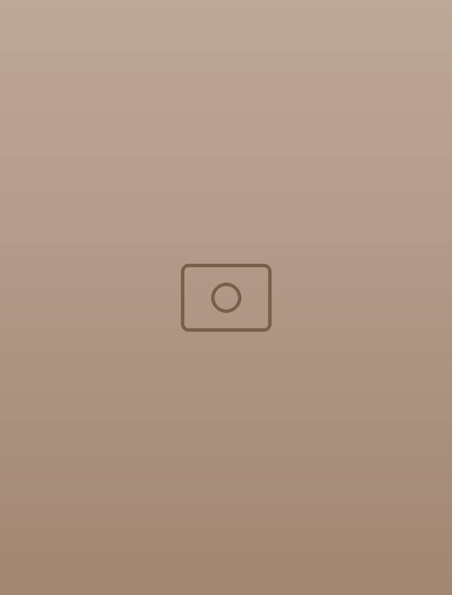
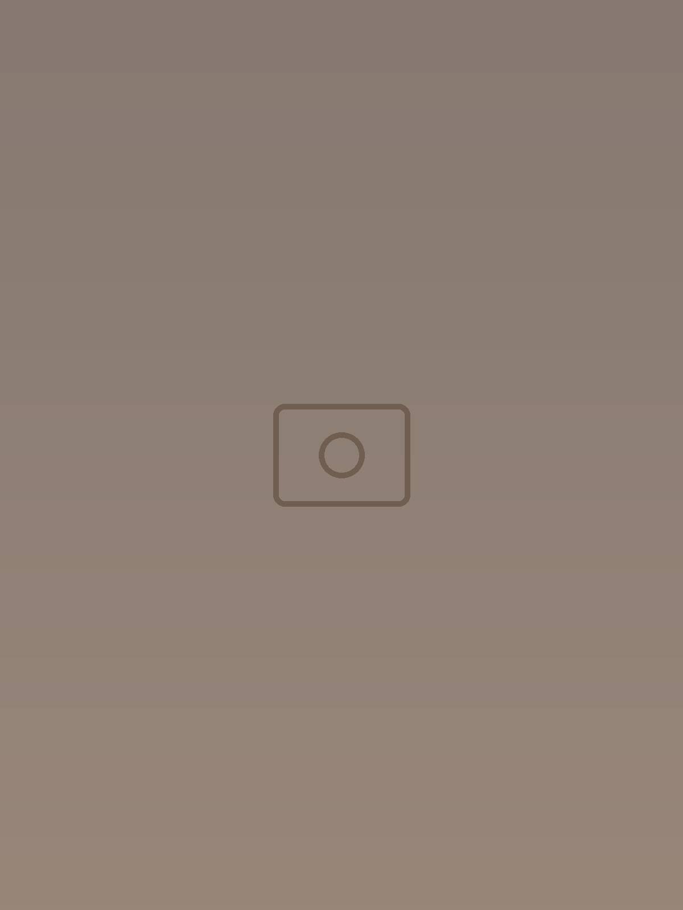
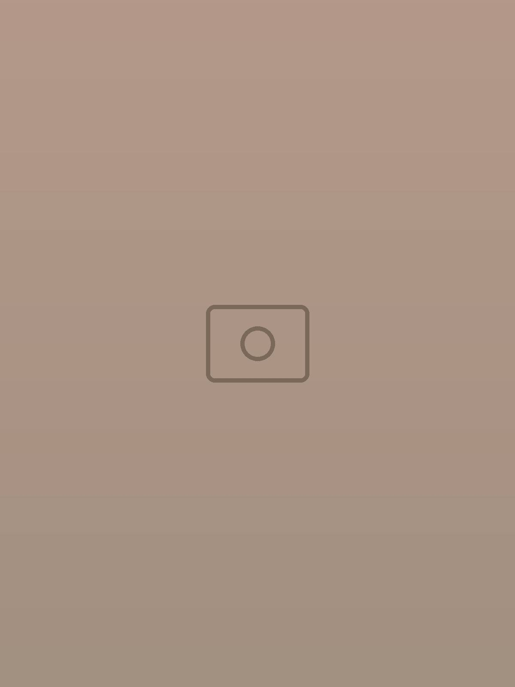

Pasta
Une pluie de parmesan, et le bonheur suit.
Cuisine méditerranéenne soignée · Tunis
Un charme d’antan, un cœur italien. Comme autrefois.
Depuis 1974, des recettes qui traversent le temps et des tables où l’on se sent bien, en plein centre-ville.
La maison
Les cuivres, le buste de bronze, les murs de stuc blanc, le damier noir et blanc et les lampes qui réchauffent le bois : chez Il Gelso, chaque objet raconte quelque chose.
Le charme, ça ne se démode pas.



Nos signatures
Des assiettes faites pour être partagées : les plats circulent, les verres trinquent, et chacun goûte un peu de tout.
Une pluie de parmesan, et le bonheur suit.

À midi, une pizza qui a tout pour plaire.

Les signatures poisson et fruits de mer de la maison.

Les grandes assiettes du soir, à savourer lentement.
On arrive affamé, on repart avec des souvenirs.
Un dessert ? Ou deux, pour goûter ?



Ce soir, au Gelso
Des chansons italiennes en fond, une lumière dorée, et des soirées dignes d’un film d’autrefois. Bonne table, bon vin, bonne compagnie.
Pendant la saison estivale, les horaires peuvent changer : appelez-nous avant de venir.
Réservez votre table
